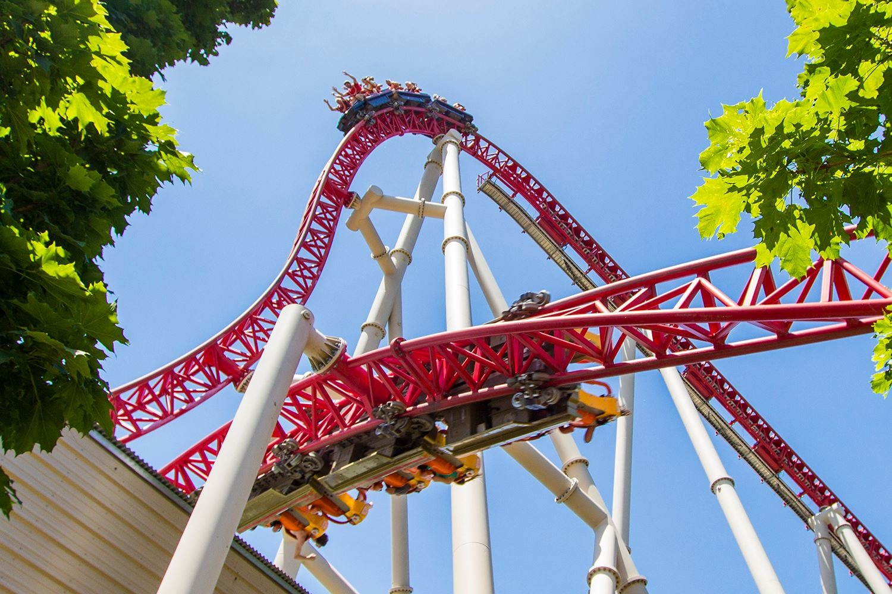
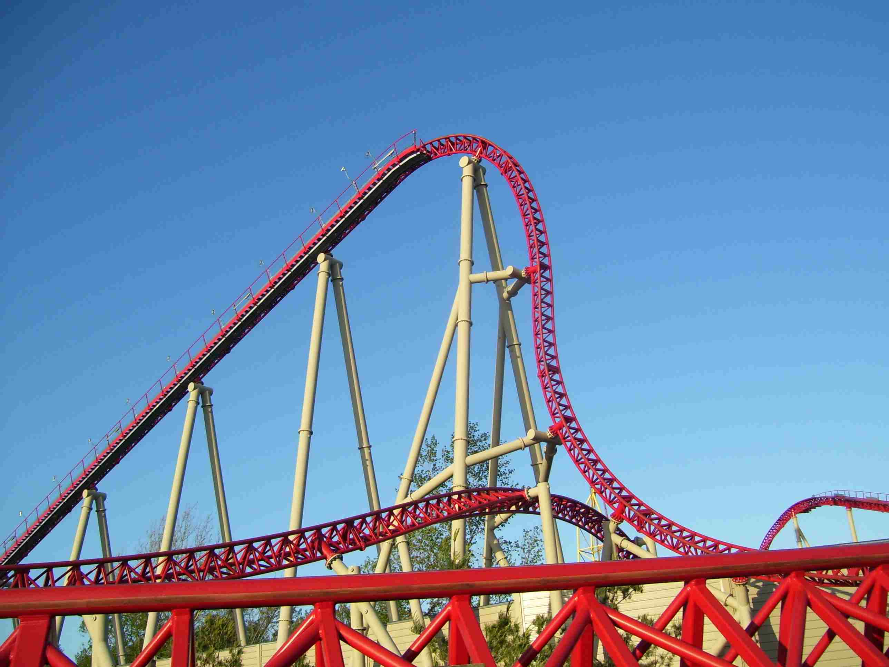
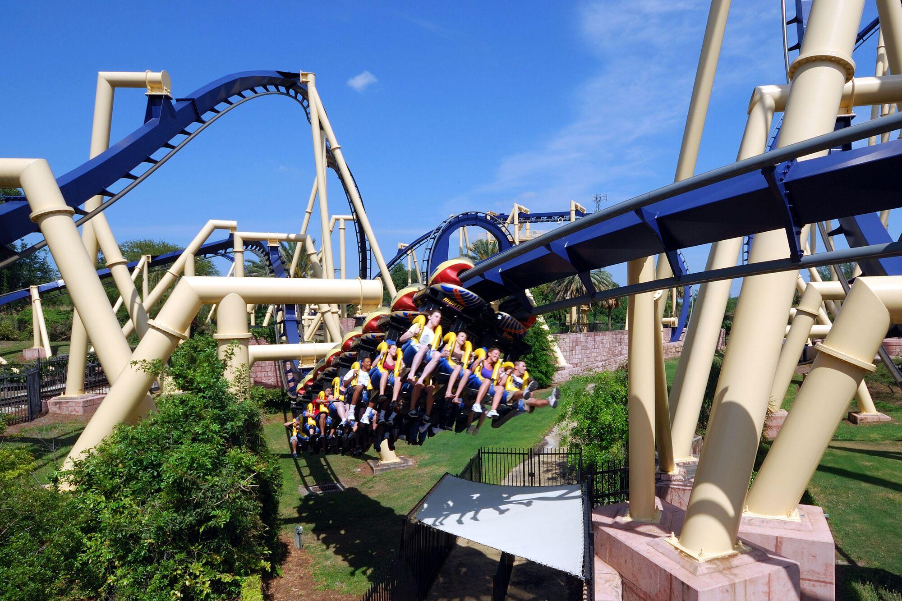
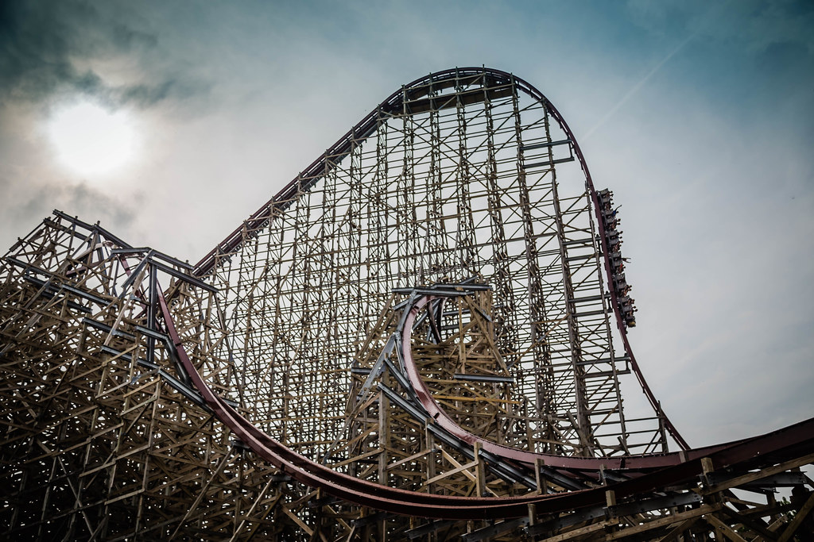
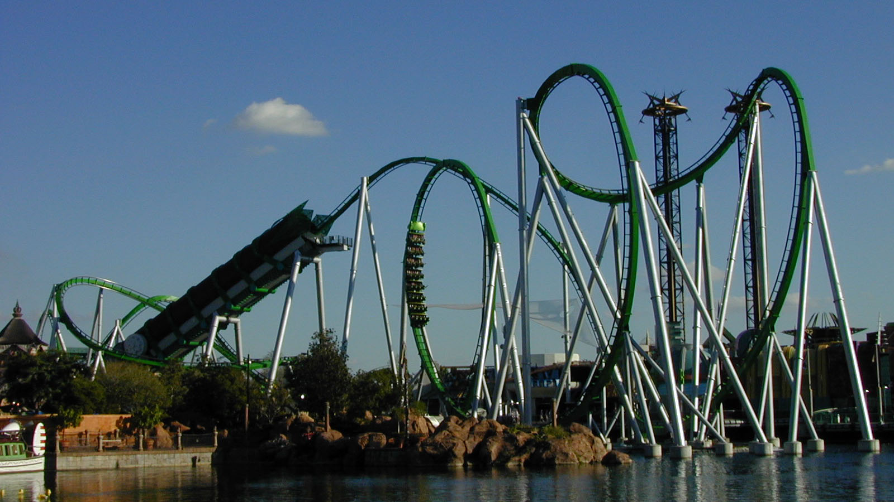
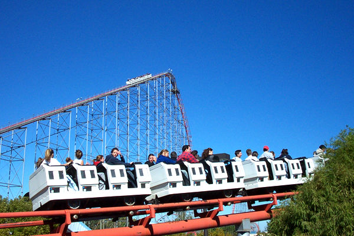
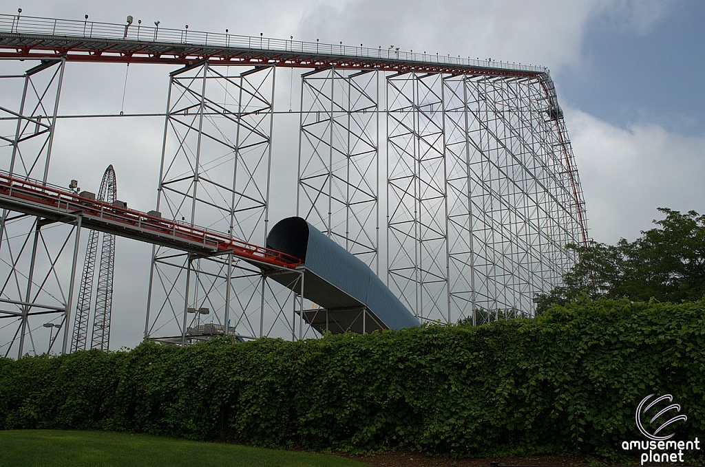

Maverick, Cedar Point
Maverick opened in 2007 and was built by Intamin Amusement Rides. It's
fast and low to the ground and features a 95 degree first drop from a
height of 105 feet along with two linear synchronous motor launches
throughout the course.


Back to top
Montu, Busch Gardens
Operating since 1996, Montu is a B&M (Bolliger & Mabillard) invered
coaster meaning guests are seated below the track. It features
multiple types of inversions and speeds up to 60 mph.


Back to top
Steel Vengeance, Cedar Point
Debuting in 2018 and built by RMC (Rocky Mountain Construction), Steel
Vengeance is a retrofit of the old Mean Streak wooden coaster that
once stood here. Its steel I-Box track on wooden frame make it a
hybrid coaster. Arguably the best coaster on the planet.


Back to top
Intimidator-305, Kings Dominion
Opening in 2010, this 300 foot monster reaches speeds of 90 mph and
had to be retracked after opening. The turn around out of the first
drop was so intense many riders would black out. This ride was built
by Intamin.


Back to top
Millennium Force, Cedar Point
Opening in 2000, Millennium Force was the first giga coaster (over 300
feet tall). Reaching speeds of up to 92 mph and featuring a cable lift
system, the first of its kind. Still extremely popular over 20 years
after its debut. Develped by Intamin.


Back to top
Sheikra, Busch Gardens
Sheikra is a B&M dive machine that opened in 2005. Riders are held
suspended at the top of the 200 foot verticle drop for several seconds
before diving towards the ground. It also features some water effects
towards the end of the course.


Back to top
Incredible Hulk, Islands of Adventure
Incredible Hulk opened in 1999 and features a tire propelled launch
out of the station and 7 inversions. In 2015 the ride track was
replaced to extend the life of this popular attraction.


Back to top
Hollywood Rip Ride Rockit, Universal Studios
This coaster has a unique vertical lift hill and several inversions.
Operating since 2009, it also has a non inverting loop which is also
unique.


Back to top
Magnum XL-200, Cedar Point
The original hyper coaster (over 200 feet tall) and fabricated on site
by Arrow Dynamics, this coaster started the coaster wars when it
opened in 1989. The first of its kind, other parks around the world
spent the next 25 years trying to out do one another by building
taller, faster, steeper and more extreme. A true classic.


Back to top